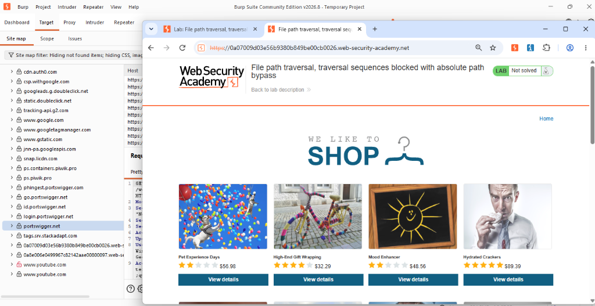
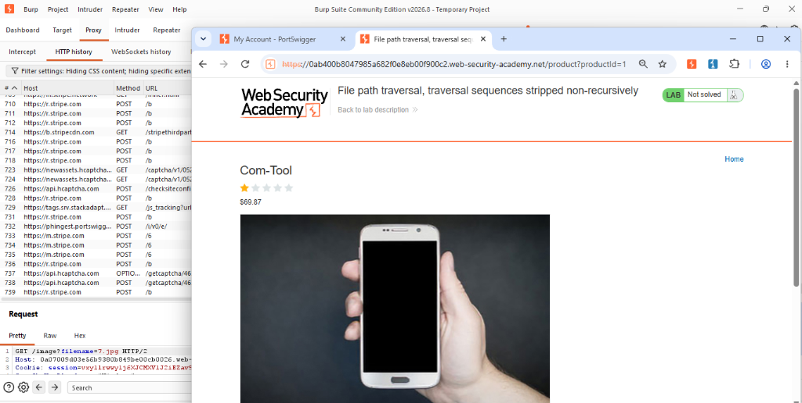
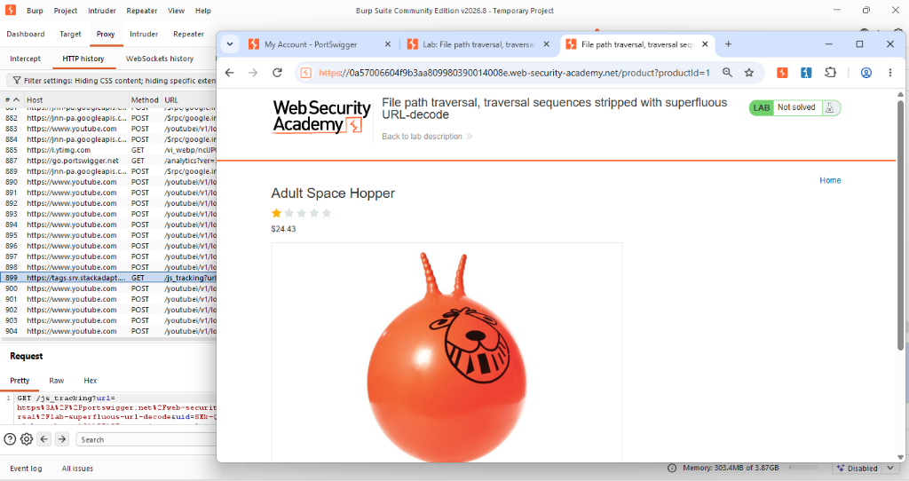
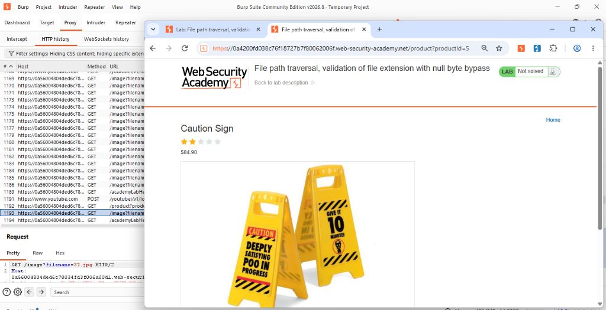

Actividad 06
ROAD TO HALL OF FAME

Lab 1: File Path Traversal (Simple Case)
CompletadoEn este laboratorio se explotó una vulnerabilidad de salto de directorio leyendo el archivo /etc/passwd del servidor modificando parámetros en Burp Suite.
Ver reporte completo
Lab 2: Absolute Path Bypass
CompletadoFile path traversal, traversal sequences blocked with absolute path bypass. Se evadió el filtro de secuencias relativas llamando al archivo desde la raíz.
Ver reporte completo
Lab 3: Stripped Non-Recursively
CompletadoFile path traversal, traversal sequences stripped non-recursively. Se evadió el filtro inyectando secuencias anidadas (....//).
Ver reporte completo
Lab 4: Superfluous URL-decode
CompletadoFile path traversal, traversal sequences decoded with superfluous URL-decode. Evadiendo filtros de seguridad mediante la ofuscación por Double URL Encoding.
Ver reporte completo
Lab 5: Validation of start of path
CompletadoFile path traversal, validation of start of path. Análisis de la insuficiencia de la validación de prefijos y la necesidad de la canonicalización de rutas.
Ver reporte completo
Lab 6: Null byte bypass
CompletadoFile path traversal, validation of file extension with null byte bypass. Explotación de la discrepancia de procesamiento de bytes nulos entre APIs de alto y bajo nivel.
Ver reporte completoLab 4: Post-Explotación
Laboratorio bloqueado. Este nivel estará disponible una vez que se complete la fase de explotación.